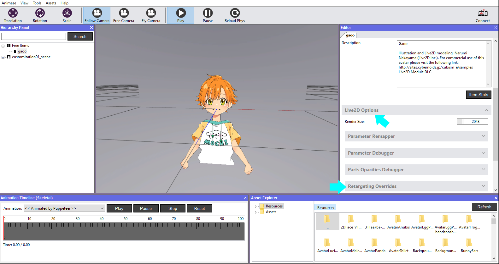
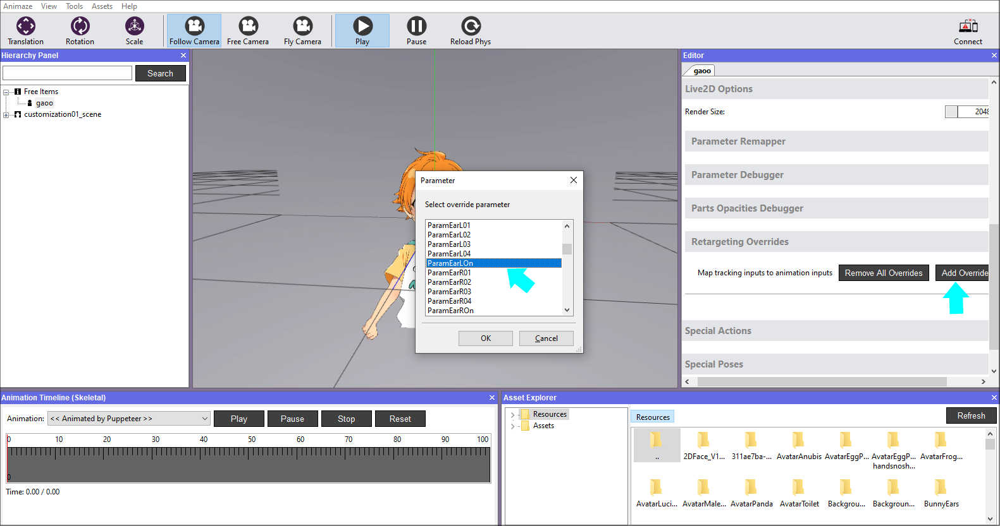
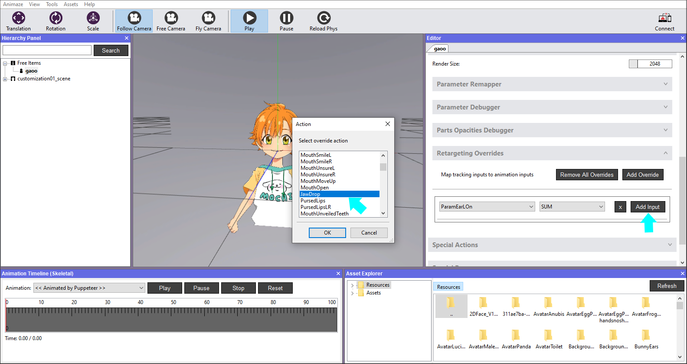
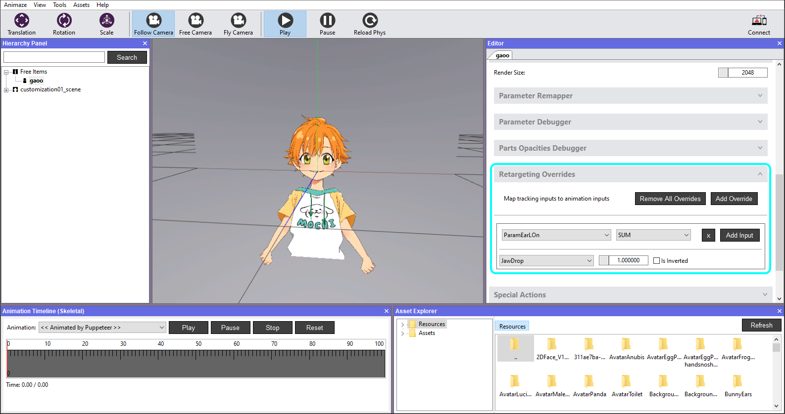
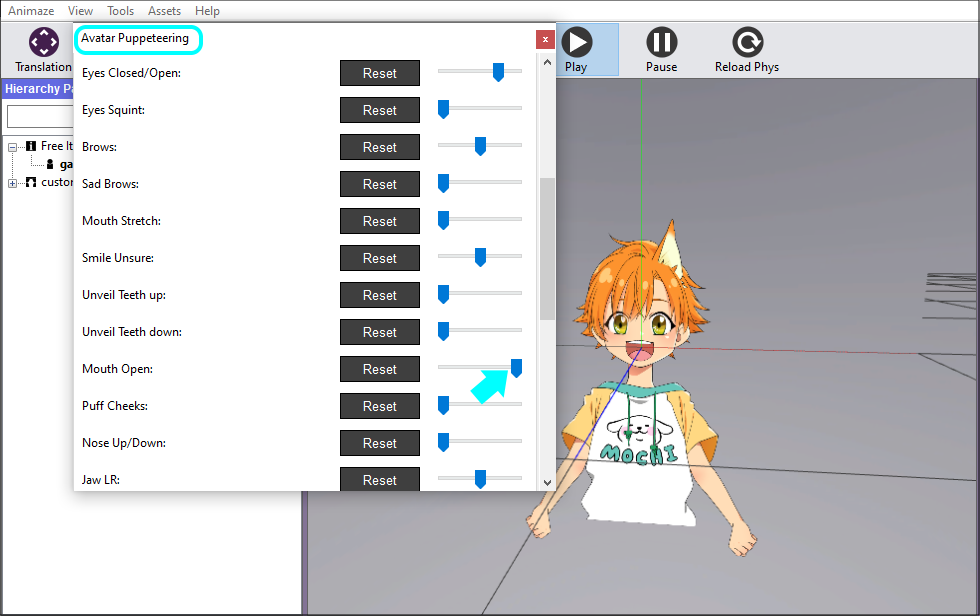

Editor Retargeting Overrides
The Editor enables artists to custom map tracking animations to animation inputs. This article talks about Live2D avatars, but this works the same way for 3D avatars as well.
Steps to add it to model:
1. Select the Live2D avatar from the Hierarchy Panel
2. In the Editor Panel, open Live2D Options and then Retargeting Overrides, or, for a 3D model, just go to the Retargeting Overrides section.

3. Click Add Override and select a Live2D Animation Input you want to retarget, or a 3D Inputifusing a 3D model. For the purpose of this guide, we selected ParamEarLOn.

4. Now add a tracking input that you want to retarget by clicking the Add Input button. We chose JawDrop for the purpose of this guide.

5. It will look like this:

6. In Avatar Puppeteering (Tools > Avatar Puppeteering), toggle the MouthOpen expression and see the effects on the avatar. When setting Mouth open to 1, the left ear will show up.

That’s all. The system enables you to also add more than one tracking input to retarget (by default, use as a weighted sum) or even use other operations on the tracking inputs such as min, max, or inverse sum.
We have also prepared a motion output parameters list for you, the avatar creator for custom-animating your avatars in Animaze. You will likely want to refer to this list to custom-map aspects like Hand Motion from Ultraleap (Leap Motion) on your custom avatar (and more).